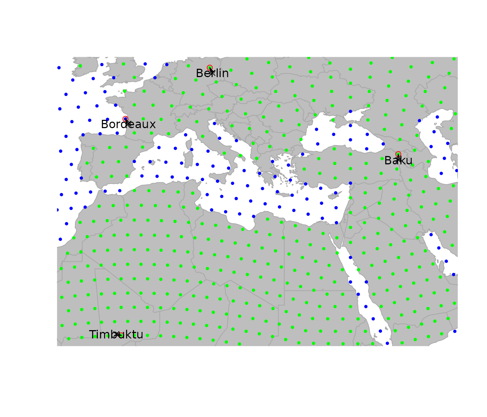
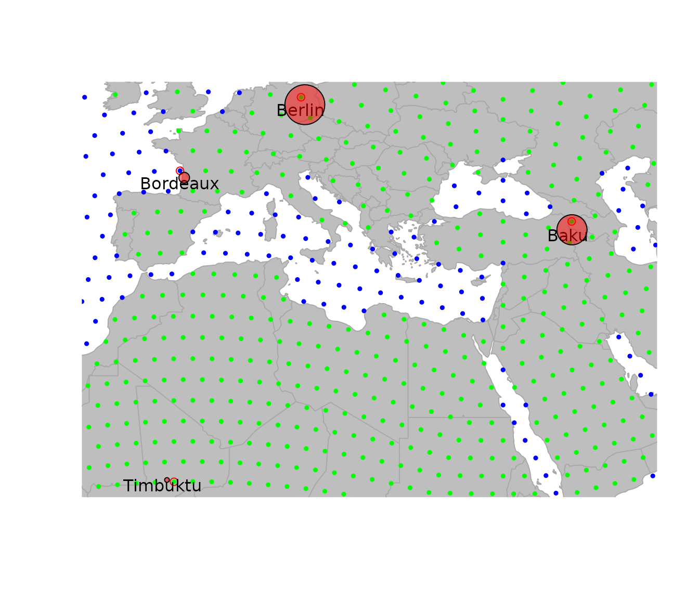
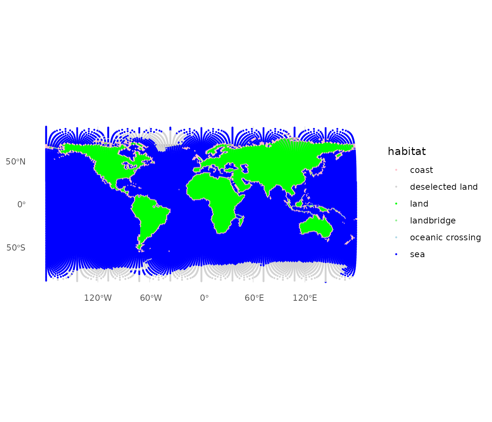
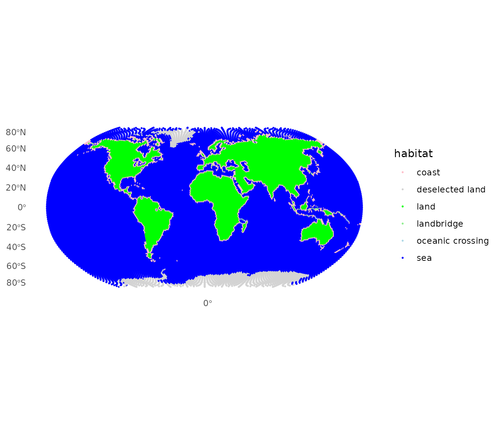
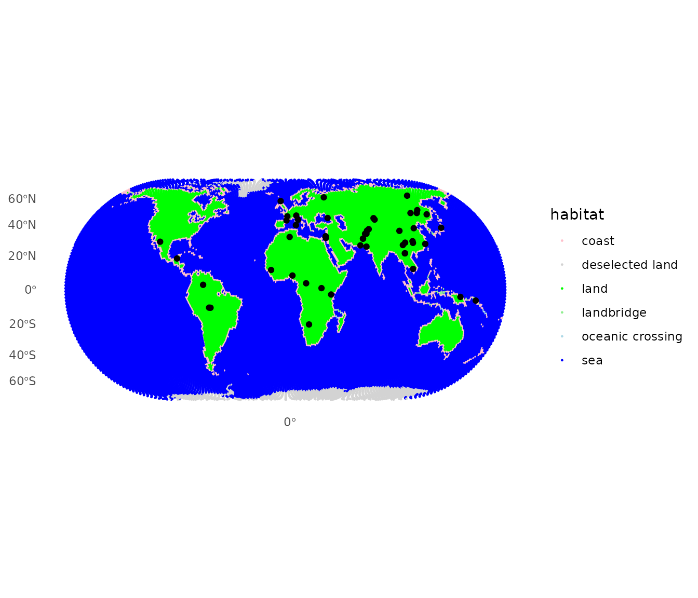
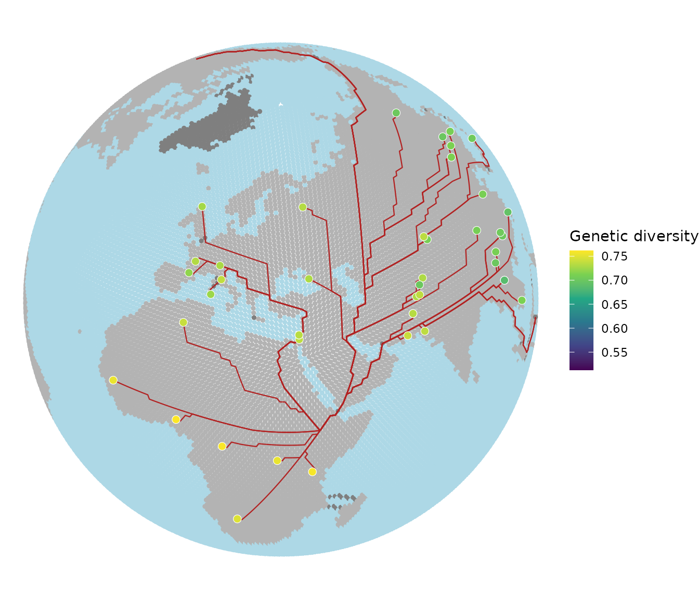

Data visualization in geoGraph
2026-09-07
Source:vignettes/articles/a3_data_visualisation.Rmd
a3_data_visualisation.RmdData visualization in geoGraph
This vignette will cover the main functions for visualizing all
objects in geoGrapgh. It first gives an overview of the basic
plotting functions and then also has a section for more advanced
visualization using ggplot2.
Basic visualizing
An essential aspect of spatial analysis lies in visualizing the data.
In geoGraph, the spatial grids (gGraph) and
spatial data (gData) can be plotted and browsed using a
variety of functions.
Plotting gGraph objects
Displaying a gGraph object is done through
plot and points functions. The first opens a
new plotting region, while the second draws in the current plotting
region; functions have otherwise similar arguments (see
?plot.gGraph).
By default, plotting a gGraph displays the grid of nodes
overlaying a shapefile (by default, the landmasses). Edges can be
plotted at the same time (argument edges), or added
afterwards using plotEdges. If the gGraph
object possesses an adequately formed meta$colors
component, the colors of the nodes are chosen according to the node
attributes and the color scheme specified in meta$colors.
Alternatively, the color of the nodes can be specified via the
col argument in plot/points.
Here is an example using worldgraph.10k:
getColors(worldgraph.10k, res.type = "rules")## habitat color
## 1 sea blue
## 2 land green
## 3 mountain brown
## 4 landbridge light green
## 5 oceanic crossing light blue
## 6 deselected land lightgray
head(getNodesAttr(worldgraph.10k))## habitat
## 1 sea
## 2 sea
## 3 sea
## 4 sea
## 5 sea
## 6 sea
table(getNodesAttr(worldgraph.10k))## habitat
## deselected land land sea
## 290 2632 7320
plot(worldgraph.10k, reset = TRUE)## Spherical geometry (s2) switched off## Spherical geometry (s2) switched on
title("Default plotting of worldgraph.10k")
It may be worth noting that plotting gGraph objects
involves plotting a fairly large number of points and edges. On some
graphical devices, the resulting plotting can be slow. For instance, one
may want to disable cairo under linux: this graphical
device yields better graphics than Xlib, but at the expense
of increased computational time. To switch to Xlib,
type:
X11.options(type = "Xlib")and to revert to cairo, type:
X11.options(type = "cairo")Plotting gData objects
gData objects are by default plotted overlaying the
corresponding gGraph. To show this, we use the
cities example from the vignette ‘get started’:
bordeaux <- c(-1, 45)
berlin <- c(13, 52)
baku <- c(44, 40)
timbuktu <- c(-3, 16)
cities.dat <- rbind.data.frame(bordeaux, berlin, baku, timbuktu)
colnames(cities.dat) <- c("lon", "lat")
row.names(cities.dat) <- c("Bordeaux", "Berlin", "Baku", "Timbuktu")
cities.dat$pop <- c(250000, 3500000, 2000000, 50000)
cities.dat## lon lat pop
## Bordeaux -1 45 250000
## Berlin 13 52 3500000
## Baku 44 40 2000000
## Timbuktu -3 16 50000
cities <- new("gData", coords = cities.dat[, 1:2], data = cities.dat[, 3, drop = FALSE], gGraph.name = "worldgraph.10k")
plot(cities, type = "both", reset = TRUE)## Spherical geometry (s2) switched off## Spherical geometry (s2) switched on
Note the argument reset=TRUE, which tells the plotting
function to adapt the plotting area to the geographic extent of the
dataset.
To plot additional information, it can be useful to extract the
spatial coordinates from the data. This is achieved by
getCoords. This method takes an extra argument
original, which is TRUE if original spatial coordinates are
sought, or FALSE for coordinates of the nodes on the grid. We can use
this to represent, for instance, the population sizes for the different
cities:
transp <- function(col, alpha = .5) {
res <- apply(
col2rgb(col), 2,
function(c) rgb(c[1] / 255, c[2] / 255, c[3] / 255, alpha)
)
return(res)
}
plot(cities, reset = TRUE)## Spherical geometry (s2) switched off## Spherical geometry (s2) switched on
par(xpd = TRUE)
text(getCoords(cities) + -.5, rownames(getData(cities)))
symbols(getCoords(cities)[, 1], getCoords(cities)[, 2],
circ = sqrt(unlist(getData(cities))), inch = .2,
bg = transp("red"), add = TRUE
)
Autoplotting and advanced visualization
Now if we want to have more advanced visualization and publication
ready plots, we can use the autoplot functions that are
based on ggplot2. Currently there are autoplot
methods for gGraph and gData objects that
provide a quick way to visualize the data. For even more customization,
we can directly use the underlying geom_ggraph,
geom_gdata and geom_gpath functions that allow
for more control over the plotting. Under the hood these functions
convert the gGraph, gData and
gPath objects into sf objects that can be
plotted using ggplot2.
Autoplotting gGraph and gData objects
For gGraph objects the autoplot function
will by default return a ggplot object with the nodes
colors based on the first node attribute and the edges (if specified as
edges = TRUE) drawn in grey.
autoplot(worldgraph.40k)
Because the ggplot layers convert the graph’s coordinates tosf geometry internally, we have full access to the
projections supported by sf. By default
autoplot uses an equirectangular projection (longitude and
latitude plotted directly). To use a different projection, add
coord_sf() with the desired CRS. For example, the Robinson
projection often used for world maps:
## Coordinate system already present.
## ℹ Adding new coordinate system, which will replace the existing one.
Similarly when we want to plot a gData object, we can
use the autoplot function. By default, the linked
gGraph will be plotted as well. If we want to plot only the
gData object, we can set the show.gGraph
argument to FALSE. Again, we can use the
coord_sf function to change the projection of the plot.
## Coordinate system already present.
## ℹ Adding new coordinate system, which will replace the existing one.
More advanced plots using geom_ggraph,
geom_gdata and geom_gpath
Finally if we want to have more control over the plotting, we can use
the geom_ggraph, geom_gdata and
geom_gpath functions. These functions allow us to customize
the plots using the full power of ggplot2. Lets say for
example we want to plot the example from the Get Started
vignette, we can use the geom_gpath function to plot the
paths and the geom_gdata function to plot the HGDP
populations. Finally we can use the coord_sf function to
change the projection of the plot to orthographic and set custom colors
for the land, sea and coast.
addis <- list(lon = 38.74, lat = 9.03)
addisNode <- closestNode(worldgraph.40k, addis)
myPath <- dijkstraFrom(hgdp, addisNode)
ggplot() +
geom_ggraph(
data = worldgraph.40k, aes(color = habitat),
edges = FALSE, size = 1, show.legend = FALSE
) +
scale_color_manual(values = c(
land = "grey70", sea = "lightblue",
coast = "grey70"
)) +
geom_gpath(data = myPath, color = "firebrick", linewidth = 0.4) +
geom_gdata(
data = hgdp, aes(fill = Genetic.Div),
shape = 21, color = "white", size = 2.5, stroke = 0.3
) +
scale_fill_viridis_c(name = "Genetic diversity") +
coord_sf(crs = "+proj=ortho +lat_0=40 +lon_0=30") +
theme_void()